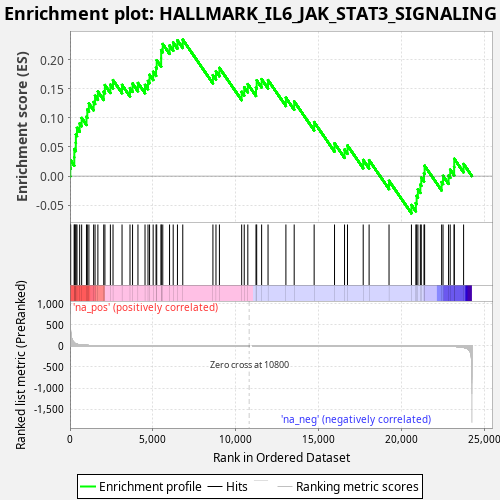
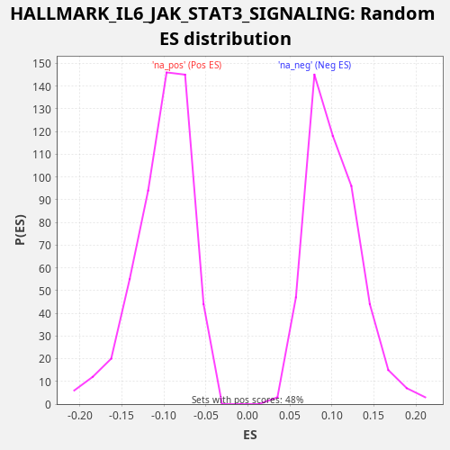

| Dataset | LabCL |
| Phenotype | NoPhenotypeAvailable |
| Upregulated in class | na_pos |
| GeneSet | HALLMARK_IL6_JAK_STAT3_SIGNALING |
| Enrichment Score (ES) | 0.23435687 |
| Normalized Enrichment Score (NES) | 2.2977471 |
| Nominal p-value | 0.0 |
| FDR q-value | 0.001675243 |
| FWER p-Value | 0.015 |

| SYMBOL | RANK IN GENE LIST | RANK METRIC SCORE | RUNNING ES | CORE ENRICHMENT | |
|---|---|---|---|---|---|
| 1 | IL6 | 17 | 562.504 | 0.0136 | Yes |
| 2 | STAT1 | 41 | 328.402 | 0.0269 | Yes |
| 3 | IL6ST | 258 | 69.424 | 0.0323 | Yes |
| 4 | IL7 | 261 | 68.951 | 0.0465 | Yes |
| 5 | BAK1 | 350 | 47.799 | 0.0571 | Yes |
| 6 | STAT2 | 355 | 46.341 | 0.0712 | Yes |
| 7 | TLR2 | 421 | 39.216 | 0.0828 | Yes |
| 8 | IL15RA | 583 | 25.233 | 0.0905 | Yes |
| 9 | IRF1 | 703 | 19.754 | 0.0998 | Yes |
| 10 | CXCL1 | 993 | 12.048 | 0.1022 | Yes |
| 11 | CNTFR | 1044 | 11.279 | 0.1144 | Yes |
| 12 | CD14 | 1140 | 9.775 | 0.1247 | Yes |
| 13 | GRB2 | 1426 | 6.358 | 0.1272 | Yes |
| 14 | PTPN2 | 1511 | 5.778 | 0.1380 | Yes |
| 15 | IRF9 | 1682 | 4.555 | 0.1453 | Yes |
| 16 | STAT3 | 2034 | 2.963 | 0.1451 | Yes |
| 17 | PTPN1 | 2106 | 2.754 | 0.1564 | Yes |
| 18 | IL1R1 | 2435 | 2.010 | 0.1571 | Yes |
| 19 | CXCL10 | 2595 | 1.745 | 0.1648 | Yes |
| 20 | HMOX1 | 3139 | 1.068 | 0.1567 | Yes |
| 21 | CSF1 | 3619 | 0.765 | 0.1511 | Yes |
| 22 | IFNGR1 | 3774 | 0.685 | 0.1590 | Yes |
| 23 | IL13RA1 | 4099 | 0.536 | 0.1599 | Yes |
| 24 | EBI3 | 4525 | 0.397 | 0.1566 | Yes |
| 25 | IL1B | 4705 | 0.350 | 0.1635 | Yes |
| 26 | TYK2 | 4799 | 0.329 | 0.1739 | Yes |
| 27 | CXCL3 | 5016 | 0.279 | 0.1793 | Yes |
| 28 | MAP3K8 | 5191 | 0.247 | 0.1864 | Yes |
| 29 | IL18R1 | 5231 | 0.241 | 0.1991 | Yes |
| 30 | OSMR | 5498 | 0.197 | 0.2023 | Yes |
| 31 | CCR1 | 5499 | 0.197 | 0.2166 | Yes |
| 32 | HAX1 | 5596 | 0.187 | 0.2269 | Yes |
| 33 | CD36 | 6005 | 0.142 | 0.2243 | Yes |
| 34 | INHBE | 6225 | 0.122 | 0.2296 | Yes |
| 35 | ITGB3 | 6481 | 0.102 | 0.2333 | Yes |
| 36 | CSF2 | 6802 | 0.081 | 0.2344 | Yes |
| 37 | LTBR | 8621 | 0.016 | 0.1734 | No |
| 38 | MYD88 | 8805 | 0.013 | 0.1802 | No |
| 39 | CXCL11 | 9013 | 0.010 | 0.1859 | No |
| 40 | STAM2 | 10355 | 0.000 | 0.1447 | No |
| 41 | PLA2G2A | 10510 | 0.000 | 0.1526 | No |
| 42 | CD38 | 10726 | 0.000 | 0.1580 | No |
| 43 | CSF3R | 11220 | -0.000 | 0.1519 | No |
| 44 | SOCS1 | 11261 | -0.000 | 0.1645 | No |
| 45 | IL10RB | 11559 | -0.001 | 0.1665 | No |
| 46 | TNFRSF1B | 11946 | -0.002 | 0.1648 | No |
| 47 | IFNAR1 | 13023 | -0.011 | 0.1346 | No |
| 48 | SOCS3 | 13523 | -0.019 | 0.1283 | No |
| 49 | TNF | 14727 | -0.052 | 0.0928 | No |
| 50 | IL17RA | 15956 | -0.107 | 0.0563 | No |
| 51 | IFNGR2 | 16560 | -0.149 | 0.0456 | No |
| 52 | PDGFC | 16738 | -0.163 | 0.0526 | No |
| 53 | IL17RB | 17686 | -0.264 | 0.0277 | No |
| 54 | TNFRSF12A | 18042 | -0.314 | 0.0273 | No |
| 55 | PIM1 | 19244 | -0.576 | -0.0081 | No |
| 56 | TNFRSF21 | 20596 | -1.193 | -0.0497 | No |
| 57 | JUN | 20862 | -1.388 | -0.0464 | No |
| 58 | ITGA4 | 20910 | -1.429 | -0.0340 | No |
| 59 | CBL | 20985 | -1.511 | -0.0228 | No |
| 60 | IL1R2 | 21133 | -1.668 | -0.0146 | No |
| 61 | ACVR1B | 21188 | -1.727 | -0.0026 | No |
| 62 | PTPN11 | 21354 | -1.945 | 0.0049 | No |
| 63 | TNFRSF1A | 21391 | -1.991 | 0.0177 | No |
| 64 | FAS | 22417 | -4.846 | -0.0104 | No |
| 65 | LEPR | 22501 | -5.367 | 0.0004 | No |
| 66 | IL4R | 22835 | -7.997 | 0.0009 | No |
| 67 | ACVRL1 | 22934 | -8.983 | 0.0112 | No |
| 68 | TGFB1 | 23171 | -12.378 | 0.0157 | No |
| 69 | CD44 | 23178 | -12.521 | 0.0297 | No |
| 70 | CD9 | 23742 | -35.774 | 0.0207 | No |

{kind=link}
{kind=link}